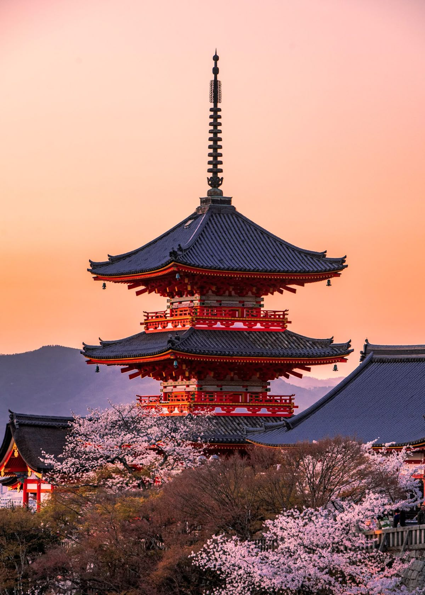
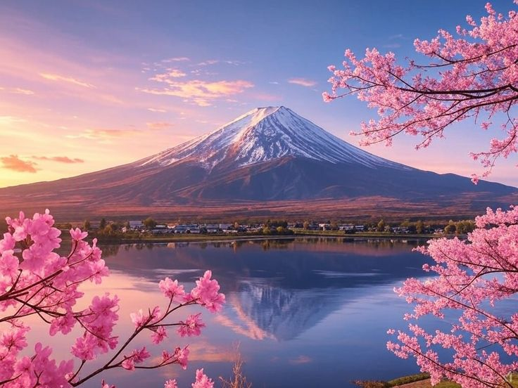
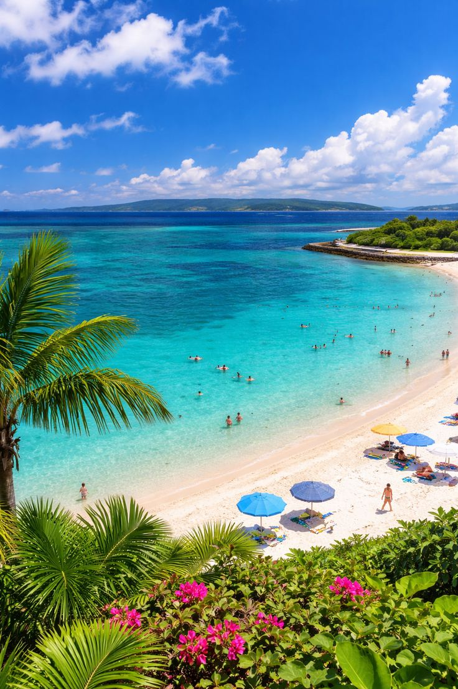
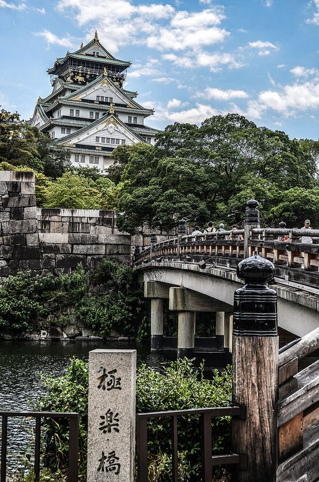

Lugares Para Visitar

Tokio
Es la capital de Japón y una de las ciudades más grandes y modernas del mundo. En Tokio puedes encontrar desde rascacielos impresionantes hasta templos tradicionales. Lugares como Shibuya (con su famoso cruce), Akihabara (zona tecnológica y anime) y Asakusa (más tradicional) muestran diferentes caras de la ciudad. Es ideal para quienes buscan tecnología, cultura urbana y experiencias únicas.

Kioto
Conocida como la ciudad de la tradición, Kioto fue la antigua capital de Japón. Aquí puedes visitar templos históricos, jardines zen y barrios donde aún se pueden ver geishas. Destacan lugares como el Pabellón Dorado (Kinkaku-ji) y el bosque de bambú de Arashiyama. Es perfecta para quienes quieren conocer la cultura japonesa más auténtica.

Monte Fuji
Es el volcán más alto de Japón y uno de sus símbolos más importantes. Su forma perfecta lo hace uno de los paisajes más fotografiados del mundo. Se puede visitar en diferentes temporadas, ya sea para escalarlo o simplemente admirarlo desde lagos cercanos como Kawaguchi. Es ideal para amantes de la naturaleza y la fotografía.

Okinawa
Este conjunto de islas al sur de Japón es famoso por sus playas paradisíacas, aguas cristalinas y clima tropical. Además, tiene una cultura diferente al resto del país, con influencias propias. Es perfecto para relajarse, hacer snorkel o disfrutar de un ambiente más tranquilo.

Osaka
Osaka es conocida como la capital gastronómica de Japón. Aquí puedes probar platillos típicos como takoyaki y okonomiyaki. También es famosa por su vida nocturna, especialmente en zonas como Dotonbori, llena de luces y anuncios llamativos. Es una ciudad divertida, ideal para quienes buscan comida y entretenimiento.

Fushimi Inari Taisha
Este santuario es uno de los más famosos de Japón gracias a sus miles de torii (puertas rojas) que forman senderos a lo largo de la montaña. Cada puerta ha sido donada por personas o empresas, lo que lo hace aún más especial. Es un lugar perfecto para caminar, tomar fotos y vivir una experiencia espiritual única.